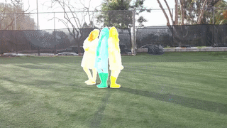

Descripción del curso
Este curso avanzado de Visión por Computadora cubre técnicas innovadoras, incluyendo CNNs avanzadas, Vision Transformers y Modelos de Difusión, explorando temas clave como ResNet, FPN, SimCLR y GANs. A través de teoría y prácticas, se ofrece una perspectiva integral de las técnicas modernas de generación y clasificación de imágenes.
¿A quién nos dirigimos?
Este curso está dirigido a estudiantes, investigadores y profesionales en inteligencia artificial y visión por computadora con idalmente conocimientos previos en redes neuronales y machine learning, interesados en técnicas avanzadas y aplicaciones de arquitecturas modernas en proyectos complejos.
¿Qué aprenderás de este curso?
En el curso descubrirás cómo implementar arquitecturas avanzadas como ResNet, entenderás Self-Supervised Learning con SimCLR, explorarás GANs, Vision Transformers y Modelos de Difusión, comprendiendo su impacto en la generación de imágenes de alta calidad.
Metodología
Este curso combina teoría y práctica, comenzando con conceptos clave seguidos de ejercicios prácticos guiados en Python y PyTorch, con apoyo en tiempo real de los instructores. Las clases se imparten en vivo a través de Zoom, con acceso a grabaciones y recursos adicionales para reforzar el aprendizaje.
Pre-requisitos
Para realizar este curso, es recomendable tener conocimientos previos en Python. Para aquellos inscritos que no cuenten con experiencia en el lenguaje, proporcionaremos material de nivelación en Python.
Se recomienda haber concluido el curso "Deep Learning para Computer Vision".
Habilidades que aprenderás
Este curso avanzado de Visión por Computadora abarca desde conceptos fundamentales de Convolutional Neural Networks (CNNs)
hasta arquitecturas y técnicas de última generación, como ResNetpara redes profundas y Self-Supervised Learning, que minimiza
la dependencia de datos etiquetados. También explorarás las Generative Adversarial Networks (GANs) para generación de imágenes,
los Vision Transformers (ViT) que utilizan transformadores en visión, y los Modelos de Difusión, una técnica emergente
para crear imágenes detalladas. Cada módulo combina teoría y práctica. Trabajarás con el framework PyTorch
 en ejercicios
prácticos ofreciendo implementaciones guiadas de estas técnicas
avanzadas para aplicar en el análisis y procesamiento de imágenes.
en ejercicios
prácticos ofreciendo implementaciones guiadas de estas técnicas
avanzadas para aplicar en el análisis y procesamiento de imágenes.
Contenido
Fundamentos
y Avances
en CNN

Descubre los conceptos esenciales de las redes neuronales convolucionales (CNN), incluyendo su estructura básica y aplicaciones en visión por computadora. Además, profundiza en la arquitectura ResNet, su solución al problema de entrenamiento en redes profundas.
Self-Supervised Learning
para Vision por Computadora

Explora el aprendizaje auto-supervisado y cómo ayuda a reducir la dependencia de grandes cantidades de datos etiquetados en visión por computadora. Con una implementación de SimCLR, ajusta modelos de autoaprendizaje y evalúa su rendimiento en tareas visuales con datasets pequeños.
Generative
Adversarial
Networks(GANs)

Adéntrate en el mundo de las GANs, una arquitectura innovadora para la generación de imágenes a través de la interacción entre un generador y un discriminador. La clasee te permitirá entender su estructura y aplicaciones en visión por computadora.
Vision
Transformers
Descubre cómo los Vision Transformers (ViT) adaptan la arquitectura de transformadores para visión por computadora y compara su funcionamiento y rendimiento con las CNNs. Mediante una implementación práctica, profundiza en la estructura y capacidad de interpretación de los ViTs en tareas de clasificación de imágenes.
Difussion
Models

Explora los modelos de difusión y su innovador enfoque en la generación de imágenes, diferenciándolos de otras arquitecturas generativas como las GANs. A través de una implementación práctica, observa las etapas de difusión y generación inversa en un dataset pequeño, visualizando los resultados generados.
Profesores
Jose Cabrera
Con una licenciatura en Robótica y Mecatrónica, y una maestría especializada en Robótica de Servicios e Industrial de la Universidad Técnica Estatal de Bauman en Moscú, cuento con una sólida formación académica en el campo. Además, he completado cursos especializados en visión por computadora en el laboratorio de Huawei, llevados a cabo en BMSTU, lo cual ha fortalecido mi experiencia en tecnologías de vanguardia. En cuanto a experiencia profesional, he tenido la oportunidad de trabajar en GAZ Group, una empresa líder en la industria automotriz en Rusia, donde apliqué mis habilidades en robótica y mecatrónica para desarrollar soluciones innovadoras en automatización industrial. Con una base sólida en robótica y mecatrónica, experiencia industrial práctica y un fuerte compromiso con la educación, estoy bien preparado para contribuir a proyectos de vanguardia en el campo. Mis habilidades incluyen lenguajes de programación como Python y C++, y tengo experiencia práctica con frameworks y herramientas de software de robótica como ROS, RobotStudio y programación de KUKA.
Henry Ruiz
Henry Ruiz es Research Scientist en la Universidad Texas A&M (AgriLife Research) en Estados Unidos. Posee un doctorado en ingeniería de esta misma institución y es miembro del prestigioso grupo de Google Developer Experts (GDE) en Machine Learning. Su tesis doctoral se enfocó en la aplicación de herramientas de geofísica, como el Ground Penetrating Radar (GPR), junto con simulación matemática, electromagnetismo, procesamiento de señales y machine learning. Actualmente, su investigación se centra en comprender y explorar a bajo nivel las capacidades emergentes de los LLMs (Large Language Models), como el razonamiento y la planificación, que han transformado la forma de interactuar con estos modelos para resolver problemas complejos mediante aplicaciones basadas en agentes y sistemas RAG(Retrieval Augmented Generation). Henry cuenta con más de 10 años de experiencia en la industria como desarrollador de software full-stack y data scientist, y es un apasionado de los proyectos open-source.
Oscar Contreras

Oscar Contreras es Ingeniero de Sistemas de profesión con grado de Maestría en Informática Avanzada por parte de la Universidad Oscar Contreras es Ingeniero de Sistemas de profesión con grado de Maestría en Informática Avanzada por parte de la Universidad de Brístol (Reino Unido). Cuenta con amplia experiencia en el ámbito de la tecnología en los ámbitos de Ingeniería de Software y Big Data. Actualmente ejerce como docente universitario a nivel pre y postgrado en diversas universidades bolivianas, como por ejemplo la UCB, EMI y Univalle.
Casos de uso, Computer Vision
Diagnóstico médico asistido por IA

Utilizando CNNs y arquitecturas avanzadas como ResNet con técnicas de
transfer learning, es posible analizar imágenes médicas (como radiografías y resonancias
magnéticas) para detectar anomalías, como tumores o fracturas. La detección de objetos y
segmentación permite, además, aislar regiones específicas en una imagen, ayudando a los
profesionales a visualizar áreas críticas y a tomar decisiones informadas rápidamente.
Control de calidad en manufactura

En una línea de producción, modelos de visión por computadora con redes
neuronales pueden clasificar productos y detectar defectos visuales, como imperfecciones o
piezas dañadas. La detección de objetos y segmentación permite localizar exactamente el área
defectuosa en cada producto, mejorando el control de calidad automatizado y reduciendo el
desperdicio.
Seguridad en transporte y tráfico

Las técnicas de detección de objetos y segmentación en imágenes se aplican
para detectar peatones, otros vehículos y señales de tráfico en imágenes en tiempo real
capturadas por cámaras en sistemas de vehículos autónomos. Este proceso es clave para mejorar la
navegación y evitar accidentes, al identificar y predecir con precisión la posición de cada
elemento alrededor del vehículo.
- Noticia - Space Coast Daily (EEUU): El Departamento de Transporte de Florida aprueba la gestión del tráfico con inteligencia artificial a nivel estatal por parte de NoTraffic
- Noticia - Digit (India): Cómo la visión artificial y la inteligencia artificial automatizarán las cabinas de peaje en las carreteras y autopistas de la India
Preguntas y respuestas frecuentes
¿El programa incluye certificado?
¡Sí! Al finalizar las clases los alumnos que hayan cumplido con los requisitos de finalización recibirán un certificado con carga horaria.
¿Cuántos pagos hay que realizar para confirmar mi inscripción?
¡Solo un pago! Aprovecha los descuentos.
¿Cuál es la edad mínima para participar en el programa?
La edad mínima para participar del programa es de 18 años.
¿Puedo participar del programa si no tengo ningun conocimiento de programación?
¡Sí! Facilitaremos nuestro material de nivelación para los inscritos.
¿El programa está enfocado a solo personas del área de informática e ingeniería de sistemas?
No, todos son bienvenidos a participar del programa.
¿Aún tienes dudas?, pulsa aquí.